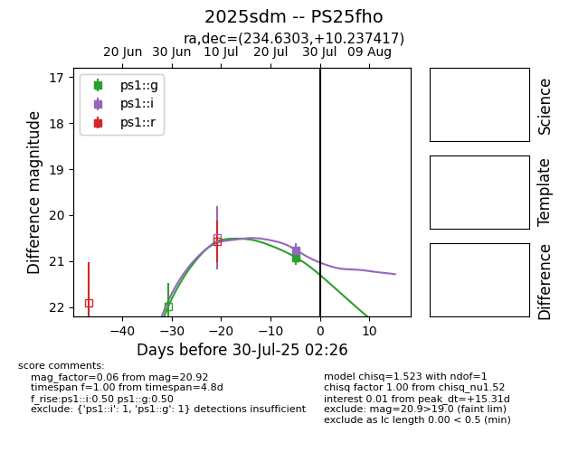

Target 2025sdm at 2025-08-05 23:02, see:
TNS: wis-tns.org/object/2025sdm
YSE: ziggy.ucolick.org/yse/transient_detail/2025sdm
alt names
2025sdm (yse,tns)
PS25fho (panstarrs)
coordinates:
equatorial (ra, dec) = (234.6303,+10.23742)
galactic (l, b) = (17.8637,+47.24309)
photometry
last ps1::g=20.92, ps1::i=20.76, ps1::r=20.88
1 ps1::g, 1 ps1::i, 1 ps1::r detections
